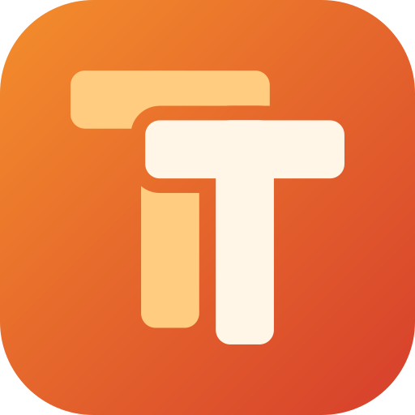

TextTack贴译
Windows 截图 OCR 翻译、贴图、便利贴，支持本地泰语 OCR
免费开源 · Windows 10/11 x64 · 不用另装 .NET · 有安装版和便携版
主要功能
截图翻译
框选屏幕区域，本地识别文字后翻译，可复制原文或译文。
实时翻译
框选区域后持续识别并翻译，快捷键启动和暂停。
泰语 OCR
PP-OCRv5 泰语识别模型，在本机运行，图片不用上传。
截图与贴图
截图标记（马赛克、模糊、序号等），把选区或剪贴板图片贴在屏幕最上层。
便利贴
复制文字或图片后按 F2，在指针处贴一张可编辑的便利贴，重启后自动恢复。
鼠标增强
按住组合键滚轮调窗口透明度、横向滚动，拖动调整窗口大小。
文字翻译
支持多种翻译服务，包括 OpenAI 兼容接口，密钥由你自己填写。
七种界面语言
简体中文、繁体中文、英语、日语、韩语、俄语、泰语。
ภาษาไทย
TextTack เป็นโปรแกรมแปลหน้าจอสำหรับ Windows แบบโอเพนซอร์สและใช้ฟรี รองรับ OCR ภาษาไทยที่ทำงานบนเครื่องของคุณเอง
- แคปหน้าจอแล้วอ่านข้อความและแปลทันที
- แปลแบบเรียลไทม์ในพื้นที่ที่เลือก
- ปักภาพไว้บนหน้าจอ และโน้ตแปะ (กด F2)
- หน้าจอโปรแกรมมีภาษาไทย
English
TextTack is a free, open-source screen translator for Windows. Select an area of the screen to recognize text locally (including Thai OCR) and translate it; pin screenshots on top of other windows; and keep editable sticky notes. Windows 10/11 x64, MIT licensed.
关于
TextTack 基于 Hon-Lu/OverTranslate 修改，沿用 MIT 许可，不是原项目的官方版本。OCR 在本地完成；要翻译的文字会发给你自己选择的翻译服务，详见隐私说明。程序没有代码签名，Windows 可能提示“未知发布者”。问题请提交到 Issues。